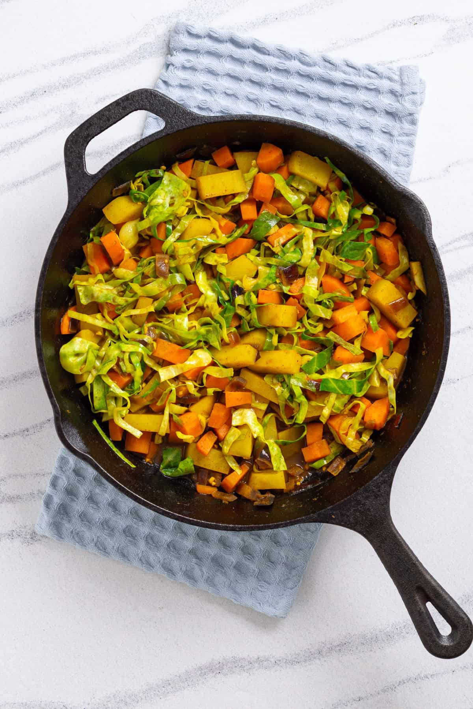

home
Atikilt

atikilt
Atikilt is a mild Ethiopian vegitable stew made with cabbage, potatoes, and carrots, gently spiced with turmeric and served with ingera.
ingredients
- cabbage
- Potatoes
- Carrots
- Onions
- garlic
- oil
- turmeric
- salt
- green chili(optional)
- black pepper(optional)
- heat oil in a pot and saute onionsandgarlic until soft.
- Add turmeric (a green chili if using), stir well.
- Add chopped carrots and potatoes, cook for a few minutes.
- Add shredded cabbage and a little water.
- cover and simmer until all vegitables are tender.
- Add salt (and black pepper if using) to taste.
- serve warm with ingera or bread.